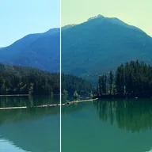

Lift Gamma Gain

Kleurwielen voor de schaduwen (lift), middentonen (gamma) en hooglichten (gain): een kleurtoon, hoe sterk die wordt doorgevoerd, en een niveau. Offset verschuift alle tonen. De stijl Op helderheid weegt elk wiel naar de helderheid van de pixel.
Lift, gamma en gain zijn de drie toonbereiken bij kleurcorrectie: Lift staat voor de schaduwen, Gamma voor de middentonen en Gain voor de hooglichten. Per bereik kiest Kleurtoon een kleur, bepaalt Hoeveelheid hoe ver je er naartoe duwt en Niveau hoe licht of donker het bereik wordt.
Instellingen
| Instelling | Type | Bereik | Standaard |
|---|---|---|---|
| Lift-kleurtoon | Hoek | 0° tot 360° | 210° |
| Lift-hoeveelheid | Getal | 0 tot 1 | 0.3 |
| Lift-niveau | Getal | -1 tot 1 | 0 |
| Gamma-kleurtoon | Hoek | 0° tot 360° | 0° |
| Gamma-hoeveelheid | Getal | 0 tot 1 | 0 |
| Gamma-niveau | Getal | -1 tot 1 | 0 |
| Gain-kleurtoon | Hoek | 0° tot 360° | 35° |
| Gain-hoeveelheid | Getal | 0 tot 1 | 0.3 |
| Gain-niveau | Getal | -1 tot 1 | 0 |
| Offset-kleurtoon | Hoek | – | 0° |
| Offset-hoeveelheid | Getal | 0 tot 1 | 0 |
| Offset-niveau | Getal | -1 tot 1 | 0 |
| Stijl | Keuze | Klassiek, Op helderheid, Standaard | Klassiek |